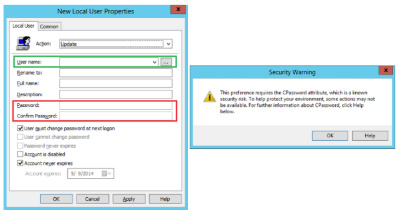

How to defend against it
Microsoft released a patch in May 13, 2014 :
MS14-025 Vulnerability in GPP could allow elevation of
privilege (KB2962486). This patch needs to be installed on all Domain Controllers. This patch prevents admins
from putting password data into a Group Policy Preference.
Note:
existing Group Policy Preference
files with passwords are not removed from SYSVOL after the updateSo we have to search them
manually:
PS> findstr /S /I cpassword \\<FQDN>\sysvol\<FQDN>\policies\*.xml